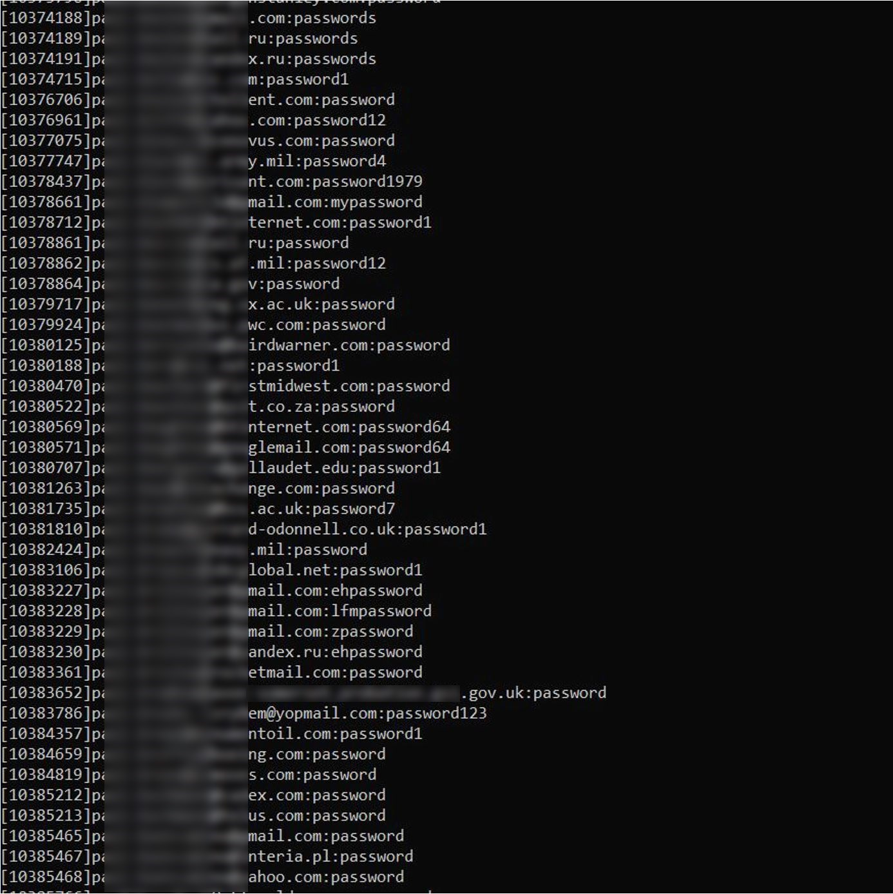

@ Last News

Noticias, opiniones y análisis de la comunidad de seguridad informatica.
Navegando en la dark web con Tor
Si mayor privacidad y anonimato suenan como música para tus oídos, es posible que no necesites buscar mucho más allá del navegador Tor. Esto es lo que se siente al navegar en la dark web usando este navegador.
Jake Moore • 17 Ene 2024Cuando hablo con la gente sobre la dark web, muchos todavía desconfían de ella y, a menudo, piensan que es ilegal incluso descargar un navegador para la dark web, y más grave aún acceder a la parte normalmente oculta de Internet; Pero por supuesto, no lo es. Sin embargo, antes de profundizar más, veamos dónde descargar el navegador Tor para acceder a la dark web.
No solo no hay nada ilegal en descargar Tor para navegar por la dark web, sino que también puedes usarlo para navegar por Internet de forma tradicional, visitar los sitios web y realizar búsquedas. El navegador Tor funciona como un navegador web normal, excepto que se conecta a la red anónima de Tor, que envuelve su tráfico en múltiples capas de cifrado mientras lo enruta aleatoriamente a través de un sistema de nodos distribuido hasta que llega al destino deseado.
Cualquiera sea el lugar por el que esté navegando, Tor brinda cierta seguridad de que no está siendo rastreado por su proveedor de servicios de Internet (ISP), el gobierno o los anunciantes y que también permanece anónimo para los sitios web y los servicios que visita. [Sin embargo, no es una bala mágica, y hay varios escenarios en los que el navegador no puede protegerlo, especialmente de usted mismo].
En este video explicamos cómo configurar Tor para navegar de forma segura.
Usando el navegador Tor
Dado que el navegador Tor generalmente se considera la puerta de entrada a la dark web, usémoslo para un viaje corto a los rincones oscuros de la web.
La dark web puede sonar como un lugar muy aterrador, pero a menudo es más el miedo a lo desconocido que el miedo a esta parte de la web. Se usa de muchas maneras, pero a decir verdad, a menudo se usa con fines ilícitos, como comprar y vender drogas, armas y otro tipo de artículos de contrabando.
Para aquellos de ustedes que sienten fascinación por la dark web pero tienen cierto temor de profundizar en ella, he decidido hacer un viaje por algunos de estos sitios y registrar mis hallazgos.
Cómo funciona TOR.
A primera vista, Tor no es muy diferente de otros navegadores. Sigue siendo un software para acceder a la World Wide Web que incluso cuenta con un motor de búsqueda que le permite visitar cualquier URL de la web abierta. Sin embargo, también puede visitar las URL de la dark web que incluyen el sufijo ".onion" y a las cuales no es posible acceder desde Safari, Firefox y Chrome.
Tor Browser usa el motor de búsqueda DuckDuckGo de forma predeterminada, un competidor del buscador de Google centrado en la privacidad que no recopila ni comparte el historial de búsqueda. La calidad de los resultados de búsqueda que devuelve DuckDuckGo han ido mejorando constantemente, y el motor de búsqueda está comenzando lentamente a asomarse como un verdadero competidor del motor de búsqueda de Google. Sobre todo, a medida que más y más personas se vuelven más conscientes de la privacidad o están preocupadas por que Internet se convierta en una web en la cual monitoreen cada uno de nuestros movimientos.
Además, es menos probable que DuckDuckGo tenga muchos anuncios, posiblemente debido al hecho de que no pueden perfilar a los usuarios y sus intereses tan fácilmente (y, por lo tanto, las búsquedas no están personalizadas). La privacidad es el principal punto de venta de DuckDuckGo. Esta alternativa al buscador de Google no realiza un seguimiento de su historial de búsqueda, la hora o la ubicación de su búsqueda, o su dirección de Internet... que son vitales para Google y su modelo de negocios.
El paquete está en el centro, protegido por varias capas (cifrados) para cada uno de los nodos.
Recorriendo las tiendas de la dark web
Después de buscar foros clandestinos y sitios de compras, no pasó mucho tiempo antes de que encontrara algunos sitios ilícitos que ofrecían drogas a cambio de bitcoins y otras criptomonedas. Pude leer las reseñas, hubo ofertas de chats en línea para discutir los detalles, todo con el conocimiento de que todo esto sería confidencial y relativamente imposible de rastrear. Esto hace que la dark web sea extremadamente atractiva los aspirantes a ciberdelincuentes y también para cibercriminales profesionales que buscan aprovechar su poderoso anonimato.
Decidí ahondar aún más en este inframundo que tenía al alcance de la mano y buscar otros productos ilegales. Pronto encontré sitios que me ofrecían billetes de banco falsos de cualquier moneda, identificaciones falsas, cuentas de PayPal, datos completos de tarjetas de crédito (con los números CVV correspondientes), servicios de hacking e incluso armas con balas no registradas. Fue aterradoramente rápido y sin esfuerzo llegar tan lejos y, en algunos casos, con un servicio al cliente sorprendentemente bueno.
Algunos sitios sostienen su reputación a partir de este servicio al cliente y, para lograr mejores valoraciones por parte de los compradores, llegaron incluso a ofrecer un número de teléfono para ayudar con cualquier problema. Todo esto contribuye a que su presencia se mantenga en el tiempo, lo que a su vez puede hacer que aumenten los precios mostrando a los compradores potenciales compradores su efectiva “legitimidad”. Sin embargo, cuestioné la autenticidad de cada sitio, pero a medida que los investigaba, más me daba cuenta de que posiblemente sería más trabajo crear sitios falsos que tener los artefactos genuinos.
Armas, drogas y... ¿datos?
Aunque se vendían armas y drogas, fue la facilidad con la que se difundían los datos de las personas, incluidas las contraseñas, lo que me hizo detenerme y pensar. Hice clic en una base de datos publicada como muestra, que abrió millones y millones de líneas de datos que mostraban direcciones de correo electrónico y contraseñas.
Nota: Verifiqué completamente con mis ex colegas en la policía digital del Reino Unido que lo que estaba haciendo era legal y dijeron: "No hay problema con que identifiques datos robados en la web oscura y los uses como sugieres; un delito solo será cometido en virtud de la Ley de uso indebido de computadoras (del Reino Unido) con respecto a sus intenciones con los datos que recupera”.

No solo es vital que los usuarios cambien las contraseñas que han sido robadas por contraseñas únicas y fuertes, sino que es fundamental habilitar en todas las cuentas que se pueda la autenticación en dos pasos (2FA), también conocida como doble factor de autenticación. Los delincuentes roban datos y nunca se eliminarán de la dark web, por lo que es importante protegerlos e invalidar lo que se sabe que ya se filtró, siempre que sea posible. Es muy probable que los datos filtrados sigan circulando durante mucho tiempo, por lo que debe tener el control de todo lo que pueda. Para esto es clave también usar un administrador de contraseñas y proporcionar solo información personal limitada a los sitios. También hay sitios, como Have I Been Pwned (HIBP), que le permiten comprobar si sus direcciones de correo electrónico o contraseñas han aparecido en una filtración de datos conocida.
Lectura relacionada: Qué hacer si tu contraseña se filtró en una brecha de seguridadEl navegador Tor tiene muchos usos para las personas que disfrutan de la libertad de navegar en la web sin ser monitoreados o rastreados. También abre la puerta al verdadero lado oscuro de la dark web, que puede ser un lugar peligroso donde se esconden los ciberdelincuentes, y probablemente seguirá existiendo mientras Internet esté con nosotros.